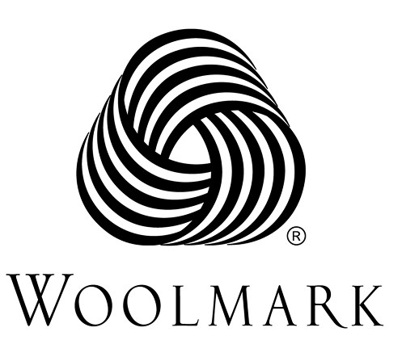
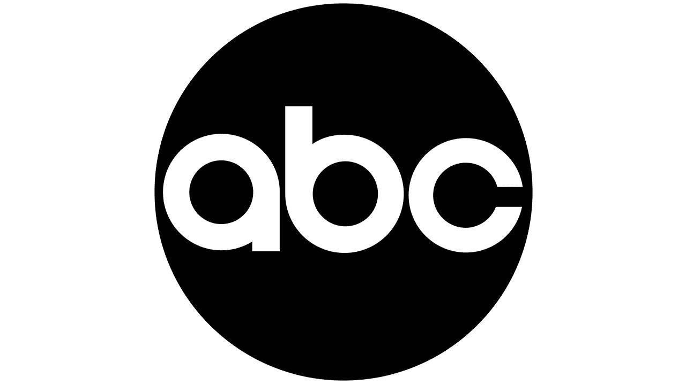
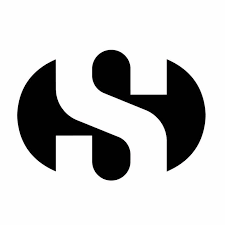
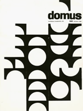
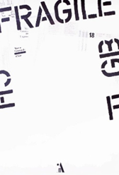
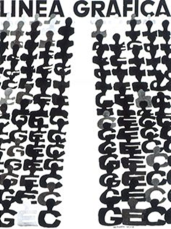

Il colore che definisce spazio e respiro
Il bianco è un colore acromatico di massima luminosità, percepito come sintesi della luce e assenza di sottrazione cromatica.
Può generare sensazioni di vuoto o distanza, mentre un uso calibrato contribuisce ad aumentare la chiarezza percettiva e l'equilibrio della composizione.
Il bianco è legato a concetti come purezza, innocenza, perfezione e semplicità. Richiama l'idea di inizio, di nuovo e di vuoto inteso come possibilità.
In ambito visivo comunica anche trasparenza, equilibrio e chiarezza, assumendo spesso un valore simbolico legato all'onestà e alla pace.
Esso è fondamentale nelle identità minimaliste ed editoriali perché permette di organizzare gli elementi in modo equilibrato senza interferenze, rendendo la comunicazione più immediata e ordinata.
Inoltre, viene spesso impiegato per creare effetti di illusione ottica e giochi percettivi, sfruttando il rapporto tra pieni e vuoti per modificare la percezione dello spazio compositivo.
255, 255, 255
0%, 0%, 0%, 0%
100, 0, 0
0°, 0%, 100%
Marchio pura lana vergine per I.W.S., 1964

Marchio American Broadcasting Company, 1962

Marchio per Superga, 1959

Copertina del N. 361 della rivista "Domus", 1959

Manifesto mostra "Fragile" per il Museo Cantonale D'Arte di Lugano, 1998

Copertina per Linea Grafica, 1959
